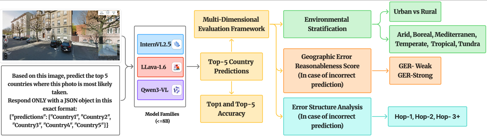
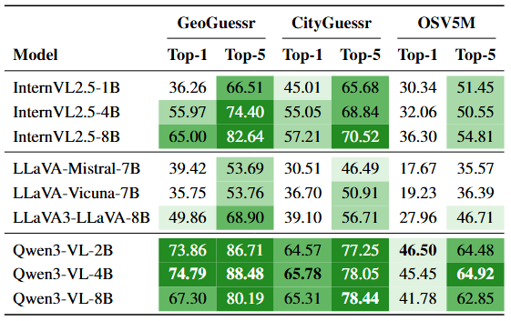
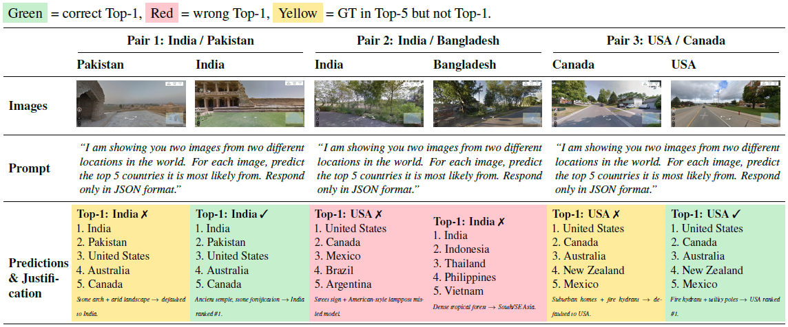

📌 Abstract
Image geolocalization has traditionally been addressed through retrieval-based place recognition or geometry-based visual localization pipelines. Recent advances in vision-language models (VLMs) have demonstrated strong zero-shot reasoning capabilities across multimodal tasks, yet their performance in geographic inference remains underexplored. In this work, we present a systematic benchmark of multiple state-of-the-art VLMs for country-level image geolocalization using ground-view imagery only. Instead of relying on image matching, GPS metadata, or task-specific training, we evaluate prompt-based country prediction in a zero-shot setting. The selected models are tested on three geographically diverse datasets to assess their robustness and generalization ability. Our results reveal substantial variation across models, highlighting the potential of semantic reasoning for coarse geolocalization and the limitations of current VLMs in capturing fine-grained geographic cues.
🎯 Key Contributions
Unified Benchmark
A consistent evaluation framework for prompt-based geolocalization across multiple VLM families and datasets.
GER Metric
Introduces Geographic Error Reasonableness (GER) to measure whether incorrect predictions are visually plausible.
Failure Analysis
Breaks down errors across urban/rural scenes, biome types, and geographic hop distance patterns.
🚀 Evaluation Overview
Given a single input image, the model predicts the top five most likely countries in JSON format. The benchmark evaluates both unconstrained free-form prediction and label-constrained prediction with a predefined country list.
Prediction Format
{
"predictions": ["Country1", "Country2", "Country3", "Country4", "Country5"]
}
Unconstrained Mode
Free-form generation of country predictions.
Label-Constrained Mode
Predictions restricted to a valid dataset-specific country list.

🏗️ Models Evaluated
InternVL Family
InternVL2.5-1B
InternVL2.5-4B
InternVL2.5-8B
LLaVA Family
LLaVA-Mistral-7B
LLaVA-Vicuna-7B
LLaMA3-LLaVA-NeXT-8B
Qwen3-VL Family
Qwen3-VL-2B
Qwen3-VL-4B ⭐
Qwen3-VL-8B
📊 Datasets
| Dataset | Images | Countries | Source |
|---|---|---|---|
| GeoGuessr-50k | ~50K | 124 | Google Street View |
| CityGuessr | ~68K | 91 | YouTube |
| OSV5M (subset) | 50K | 219 | Mapillary |
📈 Results

Main Observations
- Qwen3-VL-4B is the best overall model across the benchmark.
- Model performance varies strongly across datasets and environment types.
- Geographic failure modes become more interpretable with GER and hop-based analysis.

📚 Citation
@misc{bharadwaj2026visionlanguagemodelsfailworld,
title={Where Do Vision-Language Models Fail? World Scale Analysis for Image Geolocalization},
author={Siddhant Bharadwaj and Ashish Vashist and Fahimul Aleem and Shruti Vyas},
year={2026},
eprint={2604.16248},
archivePrefix={arXiv},
primaryClass={cs.CV},
url={https://arxiv.org/abs/2604.16248},
}
📬 Contact
For questions or collaboration, please open an issue on the repository or reach out through the contact details listed in the paper.
Tip: place this file at the root of your repository as index.html, keep the figs/ folder next to it, then enable GitHub Pages from your repository settings.